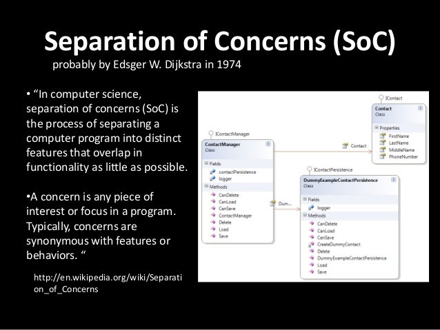

十多年來，Web 都是透過 XMLHttpRequest (XHR) 在 JavaScript 中達到非同步請求。XHR 雖然好用，但因為缺乏「Separation of concerns (SoC)」，所以算不上是很好的 API。其輸入、輸出、狀態，全都是經由存取單一物件進行管理，且透過事件來追蹤狀態。同樣的，事件架構的模型，並無法妥善配合 JavaScript 最近所著重的「Promise」與「產生器 (Generator)」架構之非同步程式設計方式。

為了修正大多數的問題，我們針對 HTTP 協定所使用的基本構成元件，透過 Fetch API 將之導入 JavaScript。另外也導入 fetch() 公用函式，以簡化網路的資源檢索作業。
用以定義此 API 的 Fetch 規格，則明確定義了瀏覽器在提取資源時的語法。若整合 ServiceWorkers 即可：
- 提升離線經驗。
- 在平台中使用 Web 的基礎元件，以成為 Web 的一份子。
在本文發表之時，Fetch API 已經進入 Firefox 39 (目前為 Nightly 版本) 與 Chrome 42 (目前為開發版本)。而 Github 亦提供 Fetch 的自動補完函式庫 (Polyfill)。
功能偵測
現在只要檢查 Headers、Request、Response，或是 window＼worker 範圍上的fetch，就能偵測是否支援 Fetch API。
簡單的提取 (Fetching)
Fetch API 最有用、最高階的部份就是 fetch() 函式。在最簡單的形式之下，此函式可取得一組網址並回傳一組 Promise 以取得回應結果 (Response)。且將擷取此回應結果作為 Response 物件。
fetch("/data.json").then(function(res) {
// res instanceof Response == true.
if (res.ok) {
res.json().then(function(data) {
console.log(data.entries);
});
} else {
console.log("Looks like the response wasn't perfect, got status", res.status);
}
}, function(e) {
console.log("Fetch failed!", e);
});
123456789101112
fetch("/data.json").then(function(res) { // res instanceof Response == true. if (res.ok) { res.json().then(function(data) { console.log(data.entries); }); } else { console.log("Looks like the response wasn't perfect, got status", res.status); }}, function(e) { console.log("Fetch failed!", e);});
如果是要提交某些參數，就會像：
fetch("http://www.example.org/submit.php", {
method: "POST",
headers: {
"Content-Type": "application/x-www-form-urlencoded"
},
body: "firstName=Nikhil&favColor=blue&password=easytoguess"
}).then(function(res) {
if (res.ok) {
alert("Perfect! Your settings are saved.");
} else if (res.status == 401) {
alert("Oops! You are not authorized.");
}
}, function(e) {
alert("Error submitting form!");
});
123456789101112131415
fetch("http://www.example.org/submit.php", { method: "POST", headers: { "Content-Type": "application/x-www-form-urlencoded" }, body: "firstName=Nikhil&favColor=blue&password=easytoguess"}).then(function(res) { if (res.ok) { alert("Perfect! Your settings are saved."); } else if (res.status == 401) { alert("Oops! You are not authorized."); }}, function(e) { alert("Error submitting form!");});
看到這裡，你想進一步了解 Fetch API，或是正好需要相關功能嗎？請回到原文觀看更多詳細的程式碼範例！